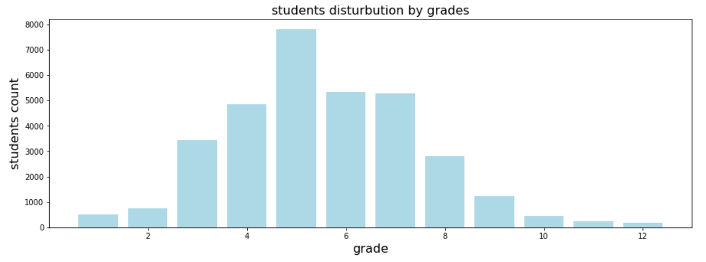
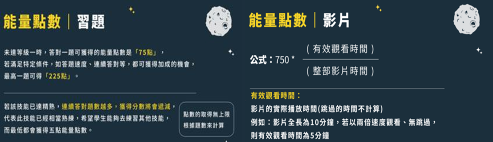
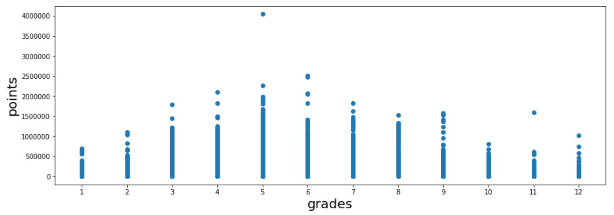
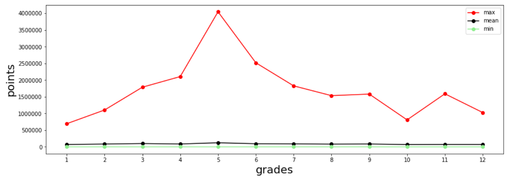
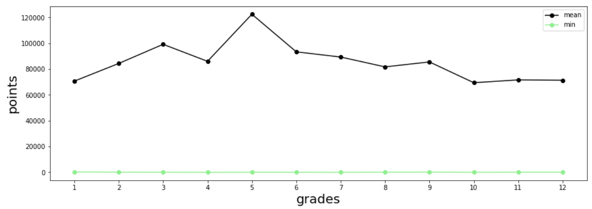
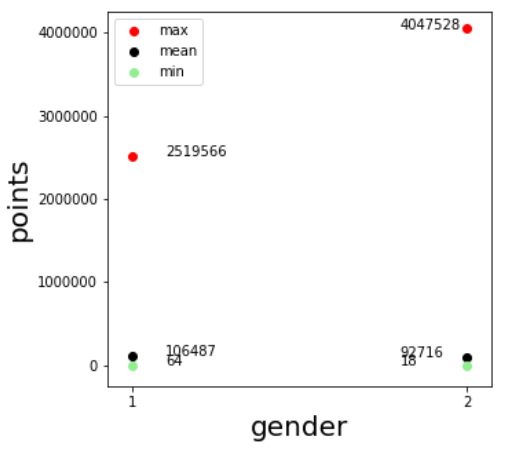
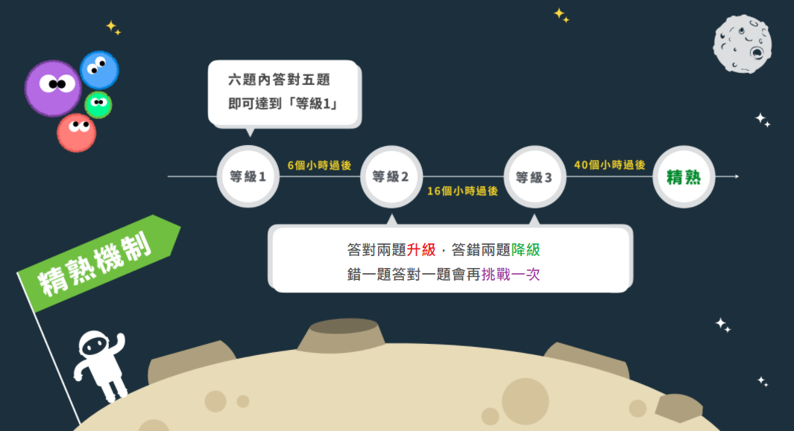
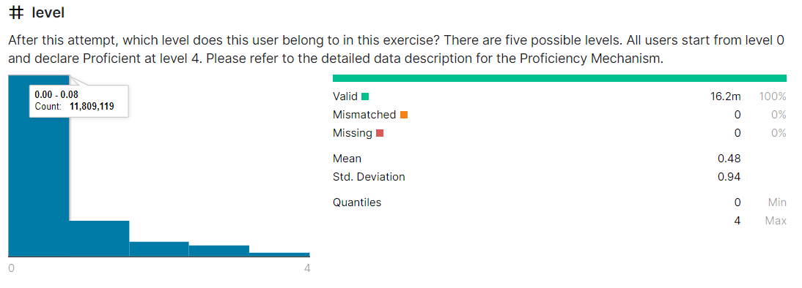
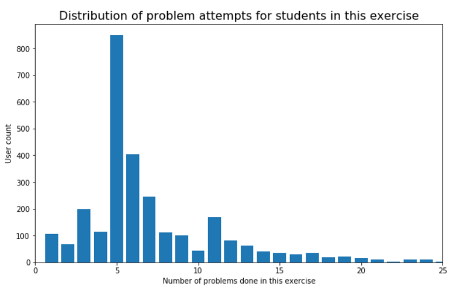

1. 學生分布情況以及使用自我學習方式觀察
此圖為均一平台中學生年級的分布資料，五年級的人數最多，而高年級以及低年級的人數偏少，資料呈現一個右偏的狀態。
均一有一個功能是可以讓每個學生新增老師來指派 Exercise 給自己，並提供老師觀看進度跟練習的結果。學生也可以把自己加為自己的老師，而班級是由一群學生及老師組成。
在此資料集中，這個功能有76%的人使用，算是高比率的，也可以從這裡看出在均一平台學習的學生都很認真。
2. 計算學生能量點數，與各欄位(累積登入天數，年級，縣市，性別)之關係，並觀察其分布狀況
上兩圖皆為kaggle均一資料集提供，此平台有一個機制叫做能量點數，有兩個方式可以獲取點數，分別是做習題或是觀看課程影片，獲取的點數公式則如上圖所示。
 上兩圖為年級與能量點數關係圖，第一張圖呈現各年級的點數分布，下圖中三條折線分別為該年級中最高、平均以及最低點數，從此圖可以看到每個年級中都會有五個以內非常認真的學生，獲得的能量點數是超出其他人很多的，甚至有一位五年級學生有將近400萬的點數。
接下來觀察各年級平均獲得的點數，大致上各年級平均獲得的點數看似差距不大，實際上最大差距可以到四到五萬點數，也由此可知，這項能量點數的機制在不同年級中雖然與年級成長無正相關，但不同年級之間還是會存在一些獲得能量的差距。
圖為性別與能量點數關係圖，最高值與最低值如同在年級的分析一樣都會有極端值的問題，所以我們這裡只看平均值，1為男性，2為女性，雖然在極端值中女學生有一位學生獲得極高的點數，但平均值來說卻是男學生較高。
3. 學生作答情形分析
 除了上述的能量點數機制外，均一還有一項針對學生作答的精熟機制，如上圖由資料集原出處提供，而下圖則是呈現出學生完成該次題目後的目前所在等級，可以看到大部分人皆是處於精熟程度等級一的位置(91%，前二長條圖)，表示大部分並沒有精熟該類型題目，或是嘗試次數過多、未檢查導致錯誤等而呈現此結果。
由此圖也可以看到學生在作答題目的嘗試次數長條圖(來源:https://www.kaggle.com/jason022085/an-exploratory-analysis-junyi-academy)，也可以發現學生平均作答次數以5次最多，嘗試到10幾次甚至20多次的也都有，圖形呈現右偏的狀態，也可以印證上圖的精熟程度有90%的人都處在等級一的階段，也表示並不是精熟該類題目的。
分析總結：
我們從資料得到學生用戶以及作答情況的資料，並依序分析了資料呈現給我們的事情，例如學生獲得的能量點數使否與他們的年級或是性別有關聯性存在，而結果是並沒有，但是可以看到大部分人得到點數的數量是很少的，相較於在各個年級中會有一兩個擁有100萬以上的能量點數，可以得知其落差性極高，這個部分可以靠推廣能量點數，或是新增點數獲取後可以有其他對於學生有益處的做法去改善。
下一部分則是分析作答情況，可以從資料裡看出因為學生嘗試次數較多的關係，精熟程度呈現出偏低的情形，因此我們建議可以讓學生可以有事先練習的機會，並檢視學生作答狀況，之後才讓學生可以去完成後續的題目，提升學生的自信以外也可以增加精熟程度。